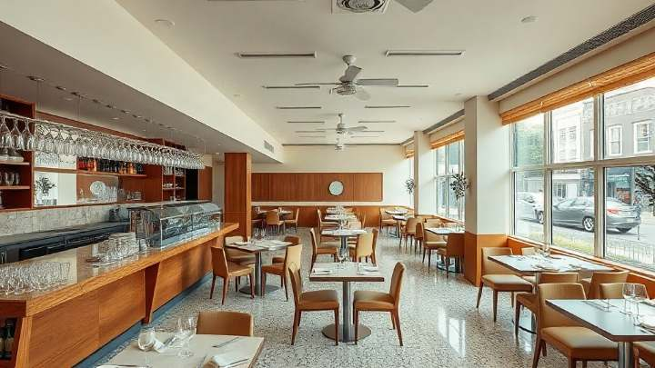

San Francisco · On-Sale Beer and Wine, Eating Place
San Francisco Type 41 applications
We hold no Type 41 for resale here. On this class the work is what we sell: we prepare and run the application with the ABC for a bona fide eating place, and if buying a license turns out to be the better route for your room, we broker that instead.
- San Francisco County
- Type 41 · On-Sale Beer and Wine, Eating Place
- Applications, not resale stock
On the book
Type 41 on the book right now: none
There is no San Francisco Type 41 license for sale on this desk today, and we would rather say so on the page than let you find out in a reply.
There is a reason it is rarely otherwise. In most California counties a Type 41 is not a quota class, so the ABC can generally issue a new one directly rather than sending you to the open market for somebody else’s. Whether that holds for your premises is established with the Department during qualification, not assumed here.
Applying is still a file, a floor plan, a menu, a set of disclosures and a city with its own view — and running that file is the service. Tell us what you are opening and we will tell you whether to apply or to buy, then handle whichever it is.
Every other class in this directory shows you the count and the price range before you ask for anything. This one shows you a zero, for the same reason.
The class
What a Type 41 covers
The class, as the ABC and the city treat it, and the two places we will not guess.
Class rules, quota position and local approval are confirmed with the ABC, and with San Francisco, for your specific premises during qualification. Nothing on this page is legal advice, and nothing here is a promise that a license will be issued.
- Class
- Type 41 — On-Sale Beer and Wine, Eating Place
- What you pour
- Beer and wine, by the drink, for guests to drink on the premises with their meals — draft, bottled and canned beer, still and sparkling wine.
- What you cannot pour
- Distilled spirits are not permitted on this class. A cocktail list needs a different license: a Type 47 where the kitchen carries the business.
- The food test
- A bona fide eating place. A working kitchen, with the equipment and the menu to produce complete meals — not snacks served around a bar.
- Minors
- Families and minors are welcome while the room is genuinely operating as an eating place.
- Sealed containers to take away
- Confirmed with the ABC for your premises. We do not promise off-premises sales on this class in advance of your file.
- Local approval
- Separate from the license, and often the longer half. San Francisco Planning decides whether an alcohol use is permitted at your address, and a conditional use may be required in your Neighborhood Commercial District.
- Where we work it
- Any county in California. This page is the San Francisco file.
- What you are buying here
- Our work on the application. There is no license price on this page because there is no license on the book to price.
The decision
Apply, or buy one on the book
Both routes are ours. This is how we tell them apart for a Type 41 room.
| What you are deciding | Apply to the ABC | Buy one on the book |
|---|---|---|
| What you end up with | A new Type 41 issued to you for your premises, if the ABC approves it. | An existing license transferred into your name, on the terms in the confidential file. |
| What decides it | Whether your room and your address qualify. | What is on the book, and at what price. |
| What we do | Prepare and run the application: premises diagram, menu documentation, ownership disclosures, ABC correspondence. | Broker the purchase and run it through a licensed escrow holder. The money is never held by us, at any point, on any file. |
| What it costs you | Our fee for the application work, quoted in writing before we start. | our fee, quoted in writing before we start, paid by the seller at closing. No buyer-side fee. |
| How long | The ABC’s own calendar, plus any local hearing. We scope it for your district before you sign a lease. | |
| Which one we will tell you to do | When the room is food-first and beer and wine carry the menu. | When the class you need is not a Type 41 — spirits, or a shop selling to take away — or your opening date will not wait. |
Commission, escrow and the 78-day median are our own terms and our own closed files. The ABC’s fees and calendar are the Department’s, and we confirm those against your file rather than publish them here.
The service
What we actually do on a Type 41
Application work with the ABC, and the city work that sits on top of it.
- Read the room first: your kitchen, your menu and your floor plan against what the ABC asks of a bona fide eating place.
- Read the address: your San Francisco Planning district, the zoning, and whether a conditional use is in play.
- Say plainly whether to apply for a new license or to buy and transfer an existing one.
- Prepare the application itself: premises diagram, menu documentation, ownership disclosures.
- Handle the ABC through review, and answer what the Department asks as it asks it.
- Work the city with you — hours, outdoor dining, neighborhood input, and any conditions proposed.
- Keep the license in step with the lease, the build-out and the opening date, so it is not the last thing to land.

Classes with San Francisco stock
Licenses you can buy here today
Four classes change hands in San Francisco often enough to have a market, and every one of them is priced on its own page.
Identifying detail — license number, licensee, premises address, terms — is not published for any license on this site. It goes to a qualified buyer under a mutual NDA, and that is a reason to inquire rather than a reason to wonder.
Type 41 questions
What operators ask us first
Do you have a San Francisco Type 41 for sale?
Not today. There is no Type 41 on our San Francisco book. What we run on this class is the application, and if one does come to us for resale it goes on the book priced, like every other license here.
What can I serve on a Type 41?
Beer and wine, by the drink, for guests to drink on the premises with their meals — draft, bottled and canned beer, still and sparkling wine. Distilled spirits are not permitted on this class.
Do I need a real kitchen?
Yes. A Type 41 is issued to a bona fide eating place, which means a working kitchen with the equipment and the menu to produce complete meals, not snacks served around a bar.
Can families come in?
Yes, while the room is genuinely operating as an eating place. It is one of the practical reasons a food-first concept lands on this class.
Should I apply, or buy a license instead?
Tell us what you are opening and we will tell you. In most California counties a Type 41 is not a quota class, so the ABC can generally issue a new one directly; where the concept needs spirits, or needs to sell to take away, buying on the book is the route. We handle whichever it turns out to be.
Can I add spirits later?
Not by converting this license. Adding a category usually means changing license type with ABC approval, and approval is not guaranteed — so choose on the room you intend to run in three years, not only the one you are opening.
What does the application cost?
Our fee is quoted in writing before we start. The Department’s own fees are set by the ABC and change, so we confirm the current schedule against your file rather than publish a figure here that could be out of date by the time you read it.
Start here
Tell us what you are opening
One reply from the desk, inside one business day: whether to apply for a Type 41 or buy a license on the book, what your address does to the timetable, and what the work costs. No newsletter, no drip sequence.
Or talk to the desk now: (800) 799-9081
Email the desk: mike@liquorlicenseagents.com